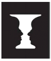
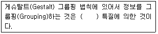
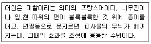
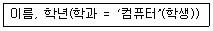
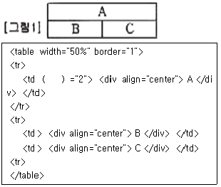
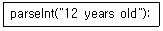
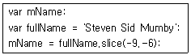
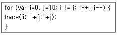
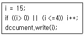
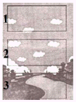

멀티미디어콘텐츠제작전문가(구) (2012-03-04 기출문제)
1과목: 멀티미디어개론
1. 네트워크 계층의 보안 프로토콜로서 IP에 보안성을 제공하고, 비밀성·무결성 등을 이용한 암호화 처리 기능을 제공하는 것은?
- DES(Data Encryption Standard)
- RSA(Rivest Shamir Adleman)
- IPSec(Internet Protocol Security)
- ARP(Address Resolution Protocol)
(정답률: 90%)

2. 인터넷 보안의 4가지 주요 기능이 아닌 것은?
- 인증
- 기밀성
- 무결성
- 유효성
(정답률: 50%)
3. Direct Sequence와 같은 대역 확산 방식을 사용하여 Fading 및 Jamming의 영향을 감소시킬 수 있는 다자간 접속방법은?
- FDMA(Frequency Division Multiple Access)
- TDMA(Time Division Multiple Access)
- CDMA(Code Division Multiple Access)
- OFDMA(Orthogonal Frequency Division Multiple Access)
(정답률: 65%)
4. PCM(Pulse Code Modulation) 전송 방식에서 4[kHz]까지의 음성신호를 재생시키기 위한 표본화 주기는?
- 100[μs]
- 125[μs]
- 200[μs]
- 225[μs]
(정답률: 64%)
5. 멀티캐스팅을 위한 것으로 이 클래스는 netid와 hostid가 없으며, 전체 주소가 멀티캐스팅을 위해 사용되는 것은?
- Class A
- Class B
- Class C
- Class D
(정답률: 70%)
6. 다음 중 소리의 3요소가 아닌 것은?
- 소리의 높이
- 고조파
- 소리의 크기
- 음색
(정답률: 73%)
7. 방송국 등의 정보 제공처에서 사용자의 요구를 미리 파악하고 있다가 해당되는 정보를 넣어 주는 기술은?
- 스트리밍
- 푸시
- 쿠키
- 다중화
(정답률: 100%)
8. 지상파[Eureka-147) DMB 채널 대역폭은?
- 2.04[MHz]
- 6.53[MHz]
- 140[MHz]
- 1.536[MHz]
(정답률: 47%)
9. 아날로그 컬러 TV방식 중 625개의 주사선수와 채널대역이 8[MHz]인 것은?
- SECAM(SEquential Color with Memory)
- NTSC(National television System Committee)
- PAL(Phase Alternative by Line)
- SDTV(Standard Definition TV)
(정답률: 37%)
10. 다음의 암호화 방식 중 비대칭 암호화 방식은?
- AES
- IDEA
- RSA
- DES
(정답률: 55%)
11. 다음 중 양자화에 대한 설명으로 맞는 것은?
- 디지털 신호의 아날로그화
- 원신호의 증폭
- 샘플링 주파수의 선정
- 샘플링된 신호를 디지털 양으로 표시
(정답률: 92%)
12. OSI 7 계층에서 표현 계층의 주요 기능은?
- 정보의 형식 설정과 코드 변환, 암호화, 판독
- 교환 및 중계 기능, 경로제어, 흐름제어 기능
- 응용 프로세스간의 송수신제어 및 동기제어
- 응용 프로세스간의 정보 교환 및 이용자 간의 통신, 전자 사서함, 파일 전송
(정답률: 47%)
13. 인간의 입과 같이 작은 음원에서 나오는 음은 그 음원 가까이에서는 대단히 강한 충격적인 음압과 구면파 효과에 의해 저주파음이 강조되는 현상은?
- 청강곡선
- 양의효과
- 근접효과
- 마스킹현상
(정답률: 91%)
14. 전자우편 시스템인 S/MIME에서 사용되는 암호 알고리즘으로 가장 거리가 먼 것은?
- SHA-1(Secure Hash Algorithm-1)
- MD5(message Digest 5 Algorithm)
- RSA(Rivest, Shamir, Adleman Algorithm)
- IDEA(International Data Encryption Algorithm)
(정답률: 47%)
15. 다음 중 문자 폰트를 표현하는 방식이 다른 하나는?
- 벡터 폰트
- 비트맵 폰트
- 트루타입 폰트
- 포스트스크립트 폰트
(정답률: 47%)
16. 동영상의 압축을 위한 표준으로서 약 2~45Mbps의 속도로 전송할 때 디지털 TV나 DVD 수준의 영상을 유지할 목적으로 제정된 것은?
- MPEG-1
- MPEG-2
- MPEG-4
- MPEG-7
(정답률: 77%)
17. 뉴스, 일기예보, 주식시세 등 여러 가지 정보를 글자나 그림으로 만든 후, 이를 부호화하여 TV(NTSC방식)전파의 빈틈에 Digital Data의 형태로 삽입하여 송출하는 것은?
- Videotex
- VAN(Value Added Network)
- ISDN(integrated Service Digital Network)
- Teletext
(정답률: 64%)
18. IEEE 802.11 무선 LAN의 매체접속제어(MAC) 방식은?
- ICMP(Internet Control Message Protocol)
- CSMA/CD(Carrier Sense Multe-Access/Collision Detection)
- CSMA/CA(Carrier Sense Multiple Access with Collision Avoidance)
- token bus
(정답률: 73%)
19. 다음 중 오디오 압축부호화 방식으로 거리가 먼 것은?
- DES
- Dolby AC-3
- MUSICAM
- MPEG1 audio/layer3
(정답률: 67%)
20. 사운드에서 원음의 진폭이 기계가 수용하는 진폭보다 크거나, 양자화하여 나타낼 수 있는 진폭보다 큰 경우에 발생하는 현상은?
- 클리핑
- 디더링
- 지터 에러
- 양자화 오차
(정답률: 46%)
21. IPv6는 주소별 라우팅 특성에 따라 3개의 범주로 구분하는데 이에 해당하지 않는 것은?
- 유니캐스트 주소
- 루프백 주소
- 멀티캐스트 주소
- 애니캐스트 주소
(정답률: 84%)
22. 다음의 색표현 방식 중 컬러프린터 인쇄 시 주로 사용되는 것은?
- RGB 방식
- CMYK 방식
- YUV 방식
- HSB 방식
(정답률: 92%)
23. 이미지에서 어둡거나 밝은 부분을 균등하게 조정해 줌으로써 너무 어둡거나 너무 밝은 이미지의 명암을 보기 좋게 하는 이미지 필터링은?
- 히스토그램 평준화(Histogram Equalization)
- 평균값 필터(Average Filler)
- 윤곽선 추출(Edge Delection)
- 샤프닝(Sharpening)
(정답률: 75%)
24. 퍼스널 컴퓨터 출력신호를 방송규격에 알맞게 NTSC 신호로 변환하는 장치는?
- TSC(Television Signal Converter)
- 스캔 컨버터(Scan Converter)
- TBC(Time Base Corrector)
- 동기결합장치
(정답률: 79%)
25. UNIX 명령 중 도스(MS-DOS) 명령 type과 유사한 기능을 갖는 것은?
- rm
- cp
- ls
- cat
(정답률: 31%)
2과목: 멀티미디어기획및디자인
26. 디자인의 4대 조건으로 합목적성, 심미성, 독창성, 경제성을 말한다. 이를 종합적으로 유지하고 구성하는데 가장 중요한 디자인 요소로 맞는 것은?
- 질서성
- 합리성과 비합리성
- 친자연성
- 문화성
(정답률: 42%)
27. 저드(D.B.Judd)의 색채조화론과 거리가 먼 것은?
- 등류의 원리
- 질서의 원리
- 숙지의 원리
- 모호성의 원리
(정답률: 70%)
28. 다음의 디자인 분류에서 3차원 디자인에 포함될 수 있는 것은?
- 타이포그래피
- 포장 디자인
- 편집 디자인
- 영상 디자인
(정답률: 42%)
29. 다음 중 색료의 3원색이 아닌 것은?
- Green
- Yellow
- Magenta
- Cyan
(정답률: 85%)
30. 레이아웃 디자인에 대한 설명으로 거리가 먼 것은?
- 디자인의 핵심적인 요소로 활자의 크기를 통일 시킨다.
- 시각적인 구성요소들을 조합하여 배열하는 작업이다.
- 주목성과 가독성, 심미성을 위해서는 마진이 필요하다.
- 중요한 정보에는 색을 사용한다.
(정답률: 75%)
31. 형태의 시각요소인 선에 대한 설명으로 거리가 먼 것은?
- 선은 형태를 표현하고 창조하는데 필수적인 요소이다.
- 물체와 관찰자의 거리가 멀어질 경우, 물체는 선으로 인식된다.
- 가시적인 선은 형이나, 형태, 물체, 구조물을 표현하는데 이용될 수 있다.
- 선은 의미와 상징성을 전달하고, 시각적 형상을 표현하며, 메시지를 전달 할 수 있다.
(정답률: 67%)
32. 대칭(Symmetry)의 기본조작이 아닌 것은?
- 직진(直進)
- 반사(反射)
- 회전(回傳)
- 이동(移動)
(정답률: 75%)
33. 다음 중 무채색을 병치시킬 때 두색의 인접부분이 어두운쪽은 밝게, 밝은 쪽은 어둡게 느껴지는 현상은?
- 색상대비
- 명도대비
- 채도대비
- 보색대비
(정답률: 75%)
34. 기본형식은 점, 선, 면, 입체이며 이념적 형태로서 모든 형태의 기본이 되는 것은?
- 순수형태
- 현실형태
- 인위형태
- 자연형태
(정답률: 70%)
35. 먼셀의 색입체에서 가장 높은 채도의 색 영역을 가지는 색상은?
- 5BG
- 5YR
- 5PB
- 5P
(정답률: 60%)
36. 게슈탈트 법칙 중 요소들이 부드러운 연속을 따라 함께 묶여 보이는 것을 무엇이라고 하는가?
- 연속성의 원리
- 근접성의 원리
- 유사성의 원리
- 폐쇄성의 원리
(정답률: 65%)
37. 칸딘스키(Kandinsky)가 제시한 형태연구의 3가지 요소가 아닌 것은?
- 육각형
- 삼각형
- 사각형
- 원
(정답률: 85%)
38. 색의 3속성 중 색의 강약의 성질, 즉 선명도를 나타내는 것은?
- 색상
- 채도
- 명도
- 농도
(정답률: 74%)
39. 점묘화 또는 모자이크 벽화에서 볼 수 있으며, 날실과 씨실로 짜여진 직물, 컬러 TV의 화면, 인쇄의 망점 등에 사용되는 혼색원리는?
- 계시혼색
- 병치혼색
- 감법혼색
- 기법혼색
(정답률: 87%)
40. 길이와 너비를 가지며, 넓이는 있으나 두께는 없는 것으로 위치와 방향을 가지는 선의 집합을 무엇이라 하는가?
- 점
- 선
- 면
- 입체
(정답률: 80%)
41. 색자극의 순도가 변하면 색상이 다르게 보인다는 색채지각 효과는?
- 스티븐스 효과
- 베너리 효과
- 애브니 효과
- 에렌슈타인 효과
(정답률: 75%)
42. 디자인의 기본요소에 속하지 않는 것은?
- 점
- 원
- 면
- 입체
(정답률: 82%)
43. 빛이 분광되는 이유는?
- 파장은 같으나 굴절률이 서로 다르기 때문
- 파장은 다르나 굴절률이 같기 때문
- 파장은 같으나 진폭이 다르기 때문
- 파장마다 굴절률이 서로 다르기 때문
(정답률: 60%)
44. 심벌(symbol)에 대한 설명으로 거리가 먼 것은?
- 실루엣이나 윤곽선으로 그려진 표현은 시각적인 메시지를 창조하는데 사용될 수 있다.
- 심벌은 기하학적 모양으로만 존재한다.
- 언어의 한계를 넘어 인간의 커뮤니케이션을 용이하게 만든다.
- 사실적 표현, 추상적 표현, 추상적 상징으로 분류할 수 있다.
(정답률: 90%)
45. 신문, 잡지, 광고물 등의 일부를 찢어 맞추어서 형상을 만드는 디자인 기법은?
- 콜라주
- 제로그라피
- 키네스코프
- 모핑
(정답률: 77%)
46. 모듈러(Modulor)의 기본 개념은?
- 그리드
- 비례
- 연관
- 일관성
(정답률: 84%)
47. 다음은 “루빈스의 컵”이라고 하는 착시 도형이다. 이 착시의 원리로 맞는 것은?

- 면적의 착시
- 바탕과 도형의 착시
- 크기의 착시
- 대비의 착시
(정답률: 92%)
48. ( )안에 들어갈 내용으로 적절한 것은?

- 이해적
- 구성적
- 시각적
- 이상적
(정답률: 46%)
49. “디자인의 영역이나 내용에 관계하여 사실적, 도식적, 반추상적일 수도 있다.”와 관련된 디자인 요소는?
- 개념요소
- 시각요소
- 상관요소
- 실제요소
(정답률: 50%)
50. 다음 내용이 설명하는 디자인 기법은?

- 몽타주
- 프로타주
- 엠보싱
- 마블링
(정답률: 60%)
3과목: 멀티미디어저작
51. 다음 중 객체지향 기법에서 하나 이상의 유사한 객체들을 묶어서 하나의 공통된 성격을 표현한 것은?
- 함수
- 클래스
- 메시지
- 메소드
(정답률: 73%)
52. 객체 지향 시스템에서 함수 이름과 연산자가 여러 목적으로 사용되는 것은?
- 정보은닉
- 캡슐화
- 다형성
- 상속성
(정답률: 67%)
53. 객체지향분석과 설계를 위한 통합 모델링 언어인 UML에서 사실상 객체지향방법론의 중심이며, 시스템 내 객체타입과 그들 사이에 존재하는 여러 가지 정적인 관계를 설명하는 다이어그램은?
- 클래스도
- 쓰임새도
- 객체도
- 컴포넌트도
(정답률: 39%)
54. PHP에서 제공되는 함수에 대한 설명으로 거리가 먼 것은?
- strcmp 함수 : 두 개의 문자열을 비교하는 함수
- str_replace 함수 : 문자열 바꾸는 함수
- srand 함수 : 난수를 만드는 함수
- del 함수 : 특정 파일을 삭제할 때 사용하는 함수
(정답률: 40%)
55. 다음 중 HTML 폼 값에서 넘겨받은 이메일 주소가 형식에 맞는지, 혹은 홈페이지 주소가 형식에 맞는지 등을 확인하기 위한 PHP의 문자열 검사 함수는?
- echo( )
- ereg( )
- ereg_replace( )
- check( )
(정답률: 39%)
56. DBMS에서 릴레이션 애트리뷰트, 인덱스, 데이터베이스 사용자 등에 관한 정보가 저장되는 곳은?
- 데이터사전
- 트랜잭선
- ER다이어그램
- 응용프로그램
(정답률: 64%)
57. 데이터베이스와 응용프로그램을 연결하는 방식으로 거리가 먼 것은?
- ODBC
- JDBC
- SQL/MM
- SQL/CLI
(정답률: 57%)
58. 다음 중 SQL 데이터 정의어(DDL)로 거리가 먼 것은?
- drop
- create
- alter
- update
(정답률: 46%)
59. 관계 데이터베이스에서 뷰(view)를 사용하는 장점으로 거리가 가장 먼 것은?
- 데이터 독립성
- 보안강화
- 성능향상
- 복잡한 테이블의 단순 접근
(정답률: 46%)
60. 아래의 관계 대수를 SQL로 옳게 나타낸 것은?

- SELECT 이름, 학과 FROM 학년 WHERE 학과 = '컴퓨터';
- SELECT 이름, 학과 FROM 학생 WHERE 학과 = '컴퓨터';
- SELECT 이름, 학년 FROM 학과 WHERE 학생 = '컴퓨터';
- SELECT 학과, 컴퓨터 FROM 학생 WHERE 이름 = '학년';
(정답률: 59%)
61. ActionScript3.0에 새로 추가된 연산자로 변수의 지정된 데이터 타입을 부울 값으로 반환하고, 상속계층 구조를 검사할 수 있으며, 인터페이스를 구현하는 클래스의 객체인지 여부도 확인 가능한 연산자는?
- is 연산자
- null 연산자
- int 연산자
- String 연산자
(정답률: 40%)
62. 자바빈즈(JavaBeans)에 대한 설명으로 거리가 먼 것은?
- 단일한 객체로서의 특성을 지닌다.
- 컴포넌트는 재사용이 가능하다.
- 객체의 내부는 은닉되어 있고, 인터페이스를 통하여 서로 간 통신을 한다.
- 이미지 벡터기반의 스크립트 언어이다.
(정답률: 50%)
63. 다음 중 자바스크립트에서 변수가 될 수 없는 것은?
- subtotal
- abstract
- number
- hangle
(정답률: 50%)
64. 자바스크립트에서 배열의 일부를 선택하여 부분적인 새로운 배열을 만들어 주는 Array 객체의 메소드 형식은?
- 배열명.join(구분자)
- 배열명.sort(매개변수)
- 배열2=배열1.slice(시작위치, 끝위치)
- 배열3=배열1.concat(배열2)
(정답률: 58%)
65. XML문서 내에 있는 데이터필드 및 텍스트들의 위치를 찾아내고 걸러내기 위한 언어는?
- XQL
- COM
- XLink
- XPL
(정답률: 54%)
66. XML의 DTD에 대한 설명으로 거리가 먼 것은?
- 문서에 허용되는 엔티티를 정의한다.
- 문서에서 허용되는 엘리먼트형을 정의한다.
- 각 엘리먼트에 할당되어 있는 속성을 정의한다.
- DTD에서 태그의 속성은 ATTRIBUTE로 정의한다.
(정답률: 59%)
67. XML 파일로 된 웹페이지로 읽어 원하는 정보를 수집하는 기능으로, 웹페이지를 만드는 사람은 주기적으로 내용을 개정하고 사용자는 그 페이지의 URL만 알면 웹 브라우저로 읽어 정보를 얻을 수 있는 기술은?
- OWL
- REST
- GIS
- PAN
(정답률: 50%)
68. SAX(Simple API for XML)에 대한 설명으로 거리가 먼 것은?
- SAX는 XML문서를 처리하기 위한 응용프로그램 인터페이스이다.
- 다양한 객체지향 프로그래밍 언어에 사용할 수 있다.
- SAX는 트리기반의 인터페이스를 사용하여 XML문서를 처리한다.
- DCM은 XML문서 전체를 메모리에 적재하기 때문에 SAX에 비하여 수행속도가 다소 저하될 수 있다.
(정답률: 50%)
69. ＜a href＞ 태그에서 새 창에 target 페이지를 띄워주는 속성은?
- _self
- _parent
- _top
- _blank
(정답률: 60%)
70. [그림1]과 같은 테이블을 만들기 위하여 ( )안에 들어갈 태그로 옳은 것은?

- cellpadding
- cell
- rowspan
- colspan
(정답률: 30%)
71. Dynamic HTML에 대한 설명으로 거리가 먼 것은?
- 정적인 HTML에 동적인 요소를 추가하기 위해 개발되었다.
- 문서의 각 요소를 객체로 정의하여 위치와 스타일을 지정할 수 있다.
- 사용자와의 상호작용을 첨가하거나 움직이게 할 수 있다.
- 자바 애플릿을 기반으로 하여 클라이언트에서 수행되므로 빠르다.
(정답률: 54%)
72. 다음 플래시 5 함수에서 추출되는 값은?

- 12
- 12 years old
- 12 years
- years old
(정답률: 70%)
73. 아래 액션스크립트 예문에서 음수 인덱스를 사용하여 부분 문자열을 주출하였을 때, 변수 mName에 대입될 값은?

- "Sid"
- "Steven"
- "Mumby"
- "Mumb"
(정답률: 39%)
74. 다음 액션스크립트 표현식에서 출력되는 값으로 거리가 먼 것은?

- i: 3 j: 7
- i: 0 j: 10
- i: 4 j: 6
- i: 2 j: 5
(정답률: 29%)
75. 다음 자바스크립트 조건문에서 출력되는 값은?

- 14
- 15
- 16
- 17
(정답률: 84%)
4과목: 멀티미디어제작기술
76. 현재와 같은 셀 애니메이션(cell animation)기법이 고안된 년도와 인물이 맞게 설명된 것은?
- 1911년, 라디슬라스 스타레비치
- 1909년, 리틀 네모
- 1912년 조지 맥마너스
- 1015년, 얼 허드(Earl Hurd)
(정답률: 54%)
77. 양자화 잡음에 대한 설명으로 거리가 먼 것은?
- 양자화 스텝이 클수록 양자화 잡음은 줄어든다.
- PCM통신에서 대부분을 차지하는 잡음이다.
- 입력신호가 있을 때 발생한다.
- 연속적인 신호를 불연속적인 신호로 변환 시 발생하는 잡음이다.
(정답률: 64%)
78. 컬러TV의 영상 신호 중 무채색만을 표현하는 신호는?
- 루미넌스 신호
- 휘도 신호
- 콘트라스트
- 크로미넌스 신소
(정답률: 46%)
79. 미국의 애플 컴퓨터에서 제창한 개인용 컴퓨터 및 디지털 오디오, 디지털 비디오용 시리얼 버스 표준규격 인터페이스는?
- IEEE 1394
- USB
- SATA
- SDI
(정답률: 59%)
80. 다음 중 5.1 채널에서 “.1”이 뜻하는 것은?
- left speaker
- sub woofer speaker
- right speaker
- sub tweeter speaker
(정답률: 60%)
81. ASF(동영상 포맷)에 대한 설명으로 가장 거리가 먼 것은?
- 윈도우 미디어플레이어에서 재생이 가능하다.
- MPEG-1 방식을 사용한 통합 멀티미디어 파일 포맷이다.
- 인터넷에서 파일을 다운로드 하면서 동시에 재생이 가능하다.
- 마이크로소프트사에서 AVI의 인터넷 확장판으로 만든 포맷이다.
(정답률: 54%)
82. 다음 중 디지털 신호 처리 체계에서 원신호와 샘플링 주파수와의 관계는? (단, fs : 샘플링 주파수, fmax : 원신호의 최대주파수)
- fs ＜ fmax
- fs = fmax
- fs ＞ fmax
- fs ≥ 2fmax
(정답률: 75%)
83. 선형(Linear) 영상 편집을 할 때 촬영된 영상 및 음성을 편집 대본 순서대로 잘라 붙이는 기본적인 편집 기법은?
- A/B 룰 편집(A/B roll editing)
- 프리롤 편집(Pre roll editing)
- 인서트 편집(Insert editing)
- 어셈블 편집(Assemble editing)
(정답률: 73%)
84. 다음 오디오 믹서의 기능 중 갑작스런 과부하 입력에 대한 왜곡을 제한시키기 위해 이용하는 것은?
- 리미터
- 윈드 스크린
- 저역 소거 필터
- 동기신호 발생기
(정답률: 84%)
85. 녹음기에서 마스킹 효과를 이용하여 히스 잡음을 줄이기 위하여 고안된 것은?
- 서라운드시스템
- 재생시스템
- 녹음시스템
- 돌비시스템
(정답률: 59%)
86. 3차원 모델링에서 이차원 도형을 어느 직선방향으로 이동시키거나 또는 어느 회전축을 중심으로 회전시켜 입체를 생성하는 기능은?
- 라운딩(Rounding)
- 프리미티브(Primitive)
- 스위핑(Sweeping)
- 트위킹(Tweaking)
(정답률: 73%)
87. 진동체 의하여 진동된 1초간 진동수의 대소는?
- 강약
- 음조
- 음색
- 음량
(정답률: 55%)
88. 다음 중 NTSC식 컬러 TV의 색부반송파 주파수는?
- 3.58[MHz]
- 6.6[MHz]
- 23.25[MHz]
- 25.75[MHz]
(정답률: 34%)
89. 어떤 사물의 형상을 전혀 다른 형상으로 점차 변형시키는 기법은?
- 모핑(Morphing)
- 크르마키(Chromakey)
- 애니메트로닉스(Animatronics)
- 매트 페인팅(Matting Painting)
(정답률: 80%)
90. 다음 중 어떤 음 A를 듣고 있을 때, A보다 진폭이 큰 음 B가 가해지면 원래의 음 A는 들리지 않게 된다. 이러한 현상은?
- 칵테일 현상
- 마스킹 현상
- 믹서 현상
- 하울링 현상
(정답률: 73%)
91. 다음 중 웨이블렛 변환과 가장 관계있는 표준은?
- H.263
- JPEG 2000
- MPEG-7
- MPEG-21
(정답률: 73%)
92. 다음 중 가로 800픽셀, 세로 600픽셀, 픽셀 당 16비트인 디지털 영상의 크기로 적절한 것은?
- 12Kbyte
- 21Kbyte
- 480Kbyte
- 960Kbyte
(정답률: 29%)
93. 다음 중 MPEG-2 영상부호화에 기본적으로 사용되는 DCT(Digital Communications Terminal; 디지털 통신 단말기)변환에서 수행되는 블록단위로 맞는 것은?
- 2×4
- 8×8
- 8×16
- 32×32
(정답률: 74%)
94. 다음 중 비, 불, 연기, 폭발 등의 자연 현상을 애니메이션으로 제작하고자 할 때 사용되는 효과로 영화 “트위스터”나 “화산고” 등에 사용된 특수 효과는?
- 로토스코핑
- 모핑
- 모션캡쳐
- 미립자 시스템
(정답률: 67%)
95. 영상 값을 어떤 상수 값으로 나누어 유효자리의 비트수를 줄이는 압축과정은?
- 양자화
- 전처리
- 변형
- 표본화
(정답률: 75%)
96. 화상회의 및 화상 전화를 응용하기 위한 영상 압축 코딩 표준은?
- G.727
- H.235
- H.225
- H.263
(정답률: 65%)
97. 잔상효과를 이용한 애니메이션 초기 장치를 무엇이라 하는가?
- 조트로프(zoetrope)
- 키네토스코프(kinetoscope)
- 프락시노스코프(praxinoscope)
- 페나키스티스코프(phenakistoscope)
(정답률: 42%)
98. 다음 중 조명의 기본적인 요건으로 거리가 먼 것은?
- 노출시간
- 눈부심
- 대비
- 밝기
(정답률: 84%)
99. 보통 필름은 24프레임으로 구성되며, 이러한 필름을 30프레임의 비디오로 늘려주어 변환하는 작업은?
- 키네코(Kineco)
- 키네스코프(Kinescope)
- 씨네룩(Cinelock)
- 테레시네(Telecine)
(정답률: 50%)
100. 아래 스토리보드에서 쓰인 카메라 기법은? (단, 카메라가 1→2→3 순으로 이동한다.)

- Close Up
- Dolly
- Pan
- Tilt
(정답률: 72%)